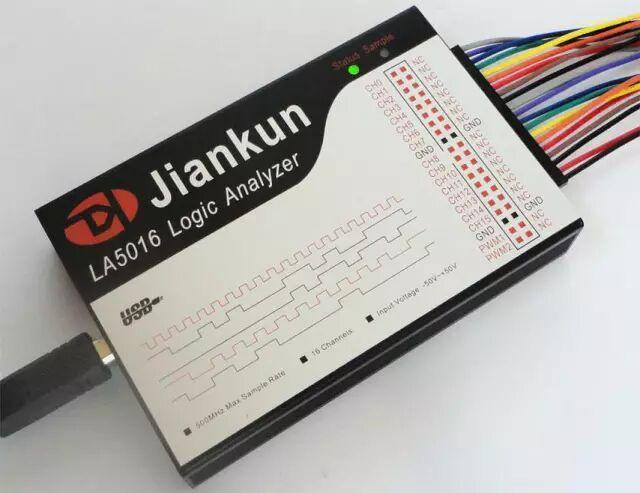
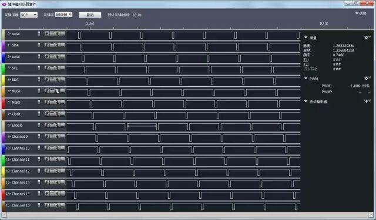

使用小程序
今天，著名的PCB哥给大家带来点干货，前几天我们提到了示波器的一些知识，而当我们说到测量仪器时，逻辑分析仪也是不得不需要强调的一种仪器，尤其在数字电路的相关测量中，逻辑分析仪的价值甚至要比示波器更高，今天，我们就来说说逻辑分析仪的相关知识。
由于电路的发展是从模拟发展到数字这样的过程，因此测量工具的发展也遵循了这个顺序。现在提到测量，首先我们想到的是示波器，尤其是一些老工程师，他们对示波器的认知度非常高。而逻辑分析仪是一种新型测量工具，是随着单片机技术发展而发展起来的，非常适合单片机这类数字系统的测量分析，而通信方面的分析中，比示波器要更加方便和强大。
一个待测信号使用10MHZ采样率的逻辑分析仪去采集的话，假如阈值电压是1.5V，那么在测量的时候，逻辑分析仪就会每100ns采集一个样点，并且超过1.5V认为是高电平(逻辑1)，低于1.5V认为是低电平(逻辑0)。而后呢，逻辑分析仪会用描点法将波形连起来，工程师就可以在这个连续的波形中查看到逻辑分析仪还原的待测信号，从而查找异常之处。
逻辑分析仪和示波器都是还原信号的，示波器前端有ADC，再加上还原算法，可以实现模拟信号的还原。而逻辑分析仪只针对数字信号，不需要ADC，不需要特殊算法，就用最简单的连点就可以了。此外，示波器往往是台式的，波形显示在示波器本身的显示屏上，而逻辑分析仪当前大多数是和PC端的上位机软件结合的，在电脑上直接显示波形。如图1所示，是一款逻辑分析仪的实物图，采样率为500M，16个通道，采样深度硬件深度为32M，经过压缩算法，最多可以实现每通道5G的存储深度，图2是逻辑分析仪的上位机软件。

图1 逻辑分析仪实物图

图2 逻辑分析仪上位机软件
逻辑分析仪有三个重要参数：阈值电压、采样率和采样深度。
阈值电压：区分高低电平的间隔。逻辑分析仪和单片机都是数字电路，它在读取外部信号的时候，多高电压识别成高电平，多高电压识别成低电平是有一定限制的。比如一款逻辑分析仪，阈值电压是：0.7~1.4V，那么当它采集外部的数字电路信号的时候，高于1.4V识别为高电平，低于0.7V识别为低电平。
采样率：每秒钟采集信号的次数。比如一个逻辑分析仪的最大采样率是100M，那么也就是说他一秒钟可以采集100M个样点，即每10ns采集一个样点，并且高于阈值电压的认定为高电平，低于阈值电压的认定为低电平。我们前边学UART通信的时候学过每一位都会读取16次，而逻辑分析仪的原理也是类似的，就是在超频读取。你信号是1M的频率，我用100M的采样率去采集，那么一个信号周期我就可以采集100次，最后用我们小学学过的描点法把采集到的样点连起来，就会还原出信号，当然100倍采样率的脉宽误差大概是百分之一。根据奈奎斯特定律来说，采样率必须是信号频率的2倍以上才能还原出信号，因为逻辑分析仪是数字系统，算法简单，所以最低也是4倍于信号的采样率才可以，一般选择10倍左右效果就比较好了。比如你的信号频率是10M，那么你的逻辑分析仪采样率最低也得是40M的采样率，最好能达到100M，提高精确度。
存储深度：我们刚才说了采样率，那采集到的高电平或者低电平信号，我们要有一个存储器存储起来。比如我们用100M采样率，那么1秒就会产生100M个状态样点。一款逻辑分析仪能够存储多少个样点数，这是逻辑分析仪很重要的一个指标。如果我们的采样率很高，但是存储的数据量很少，那也没有多大意义，逻辑分析仪可以保存的最大样点数就是一款逻辑分析仪的存储深度。通常情况下，数据采集时间=存储深度/采样率。
此外，逻辑分析仪还有输入阻抗和耐压值等几个简单参数。所有的逻辑分析仪的通道上，都是有等效电阻和电容的，由于测量信号的时候分析仪通道是并联在通道上的，所以分析仪的输入阻抗如果太小，电容过大，就会干扰到我们线上的信号。理论上来讲，阻抗越大越好，电容越小越好。通常情况下，逻辑分析仪的阻抗都在100K以上，电容都在10pf左右。所谓的耐压值，就是说如果你测量超过这个电压值的信号那么分析仪就可能被烧坏，所以测量的时候必须要注意这个问题。
1、硬件通道连接。首先我们要把逻辑分析仪的GND和待测板子的GND连到一起，以保证信号的完整性。然后把逻辑分析仪的通道接到待测引脚上，待测引脚可以用多种方式引出来。
2、通道数设置。一般情况下，大多数逻辑分析仪有8通道、16通道、32通道等数目。而我们采集信号的时候，往往用不到那么多通道，为了我们更清晰的观察波形，可以把用不到的通道隐藏起来。
3、采样率和采样深度设置。首先要对待测信号最高频率有个大概的评估，把采样率设置到它的10倍以上，还要大概判断一下我们要采集的信号的时间长短，在设置采样深度的时候，尽量设置的有一定的余量。采样深度除以采样率，得到的就是我们可以保存信号的时间。
4、触发设置。由于逻辑分析仪有深度限制，不可能无限期的保存数据。当我们使用逻辑分析仪的时候，如果没有采用任何触发设置的话，从开始抓取就开始计算时间，一直到存满我们设置的存储深度后，抓取就停止。在实际操作过程中，开始抓取的一段信号可能是无用信号，有用信号可能就是其中一段，但是无用信号还占据了我们的存储空间。在这种情况下，我们就可以通过设置触发来提高存储深度的利用率。比如我们如果想抓取UART串口信号，而串口信号平时没有数据的时候是高电平，因此我们可以设置一个下降沿触发。从点击开始抓取，逻辑分析仪不会把抓到的信号保存到我们的存储器中，而是会等待一个下降沿的产生，一旦产生了下降沿，才开始进行真正的信号采集，并且把采集到的信号存储到存储器中。也就是说，从点击开始抓取到下降沿这段时间内的无用信号，被我们所设置的触发给屏蔽掉了，这是一个非常实用的功能。
5、抓取波形。逻辑分析仪和示波器不同，示波器是实时显示的，而逻辑分析仪需要点击开始，开始抓取波形，一直到存储满了我们所设置的存储深度结束，然后我们可以慢慢的去分析我们抓到的信号，因此点击“开始抓取”这个是必须要有的。
6、设置协议解析(标准协议)。如果你抓取的波形是标准协议，比如UART、I2C、SPI这种协议，逻辑分析仪一般都会配有专门的解码器，可以通过设置解码器，不仅仅像示波器那样把波形显示出来，还可以直接把数据解析出来，以十六进制、二进制、ASCII码等各种形式显示出来。
7、数据分析。和示波器类似，逻辑分析仪也有各种测量标线，可以测量脉冲宽度，测量波形的频率，占空比等信息，通过数据分析，查找我们的波形是否符合我们的要求，从而帮助我们解决问题。
示波器是专业测量模拟信号的，而测量分析数字信号，逻辑分析仪比示波器强大许多，主要有以下几个方面。
1、测量数字信号时，示波器通常可以用来观察有没有信号或者是信号的质量如何，逻辑分析仪主要用来分析信号高低电平时序时间，以及通信的是什么数据。
2、逻辑分析仪通道数通常比示波器多。示波器常见有单通道、双通道和四通道。而逻辑分析仪常见有8通道、16通道、32通道或者更多，测量多个信号运行状态，尤其是并行数据，通道最够多才能把所有的通道测量分析出来。
3、具有延迟能力，可以保存更长时间的数据。示波器是实时显示的，实际上他只能显示其中一小段数据，可以实现快速刷新，带来的缺点就是存储深度很低。而逻辑分析仪有较大的存储深度，可以保存大量的数据，而后一点点进行分析。
4、具有多种灵活的触发功能，可以实现对欲获取的数据进行挑选，对系统运行中的程序段进行调试。示波器通常只有上升沿、下降沿和电压设置的触发，而逻辑分析仪不仅仅有上升沿和下降沿触发，还可以设置并行数据等更复杂的触发。
5、具备强大的数据解析能力。对于一些复杂的协议，示波器显示的是波形，而逻辑分析仪可以直接把十六进制数据解析出来。除了我们前边讲过的三种协议外，现在很多逻辑分析仪都具备几十种协议解析器，可以方便的显示出解析的数据，并且解析出来的数据可以显示成为ASCII码、二进制、十进制、十六进制等等，方便直观。
6、可以将抓到的波形以CSV等格式导出提供给第三方工具，比如matlab进行时域分析。
在模拟时代，示波器有着不可替代的优势，但是步入数字世界，逻辑分析仪拥有更强大的功能，可以称之为分析数字通信的利器。